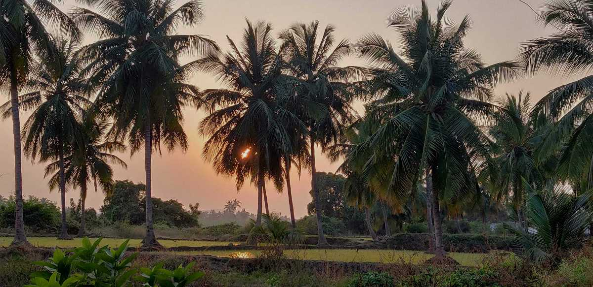
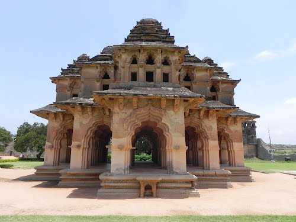
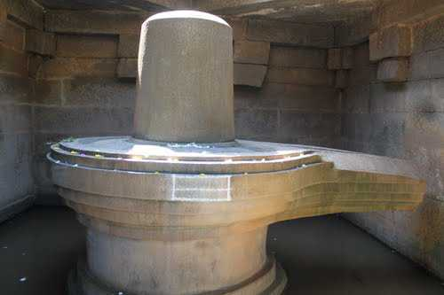
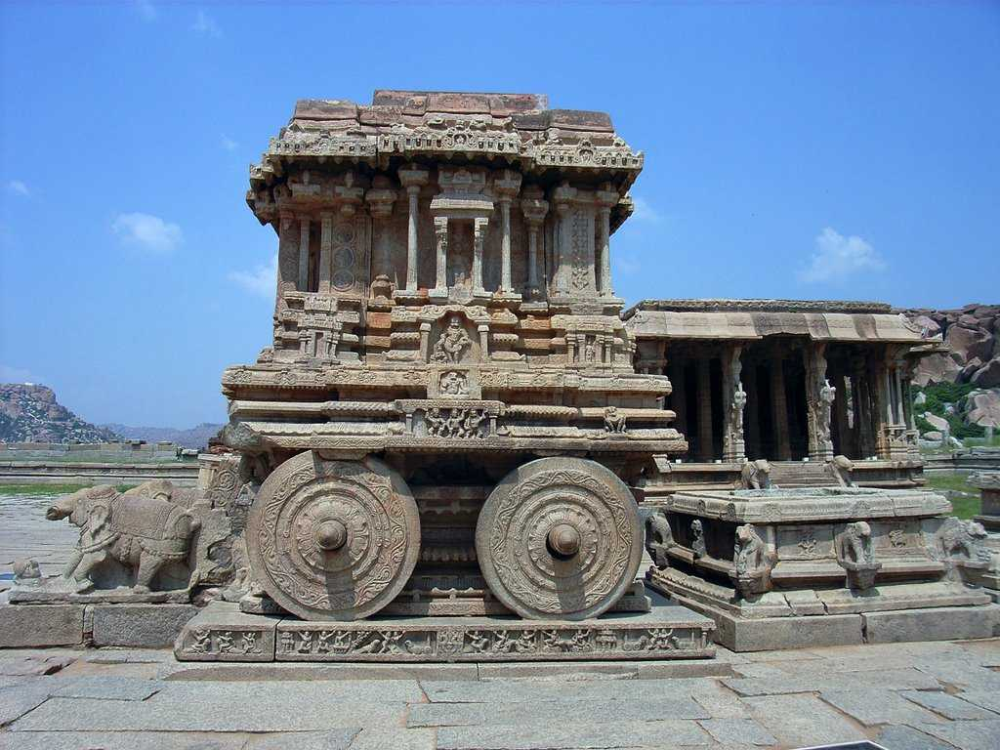
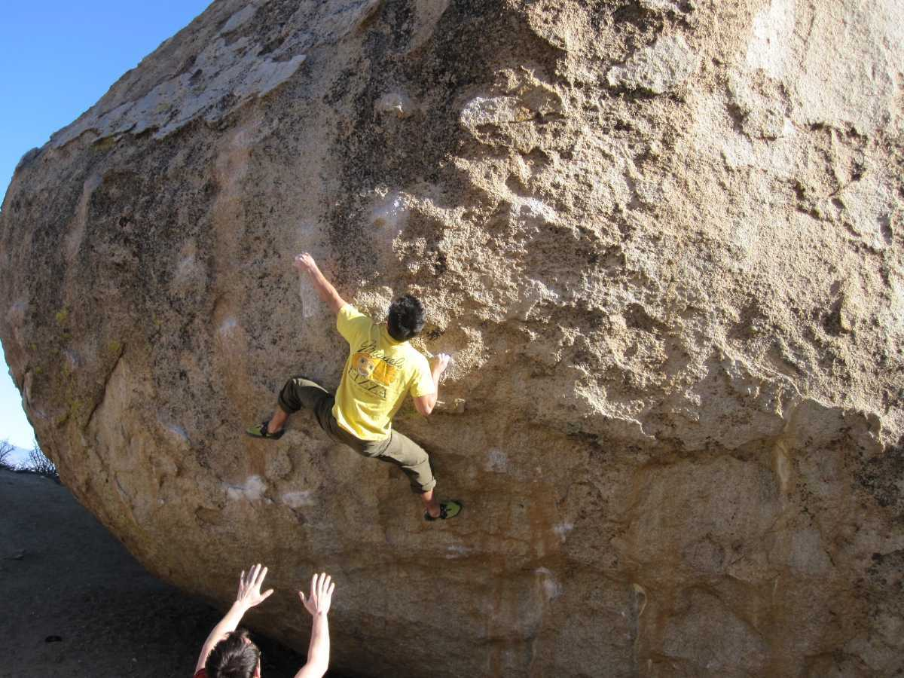
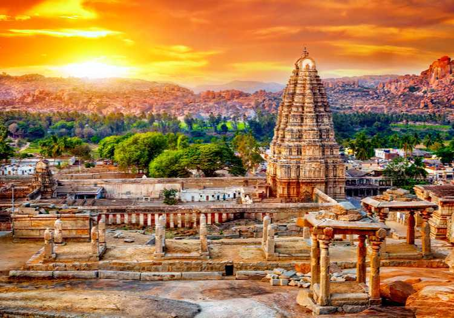

Hampi, situated in the Indian state of Karnataka, is one of the most extraordinary heritage sites in the world. Once the flourishing capital of the Vijayanagara Empire in the 14th to 16th centuries, Hampi was among the richest cities in the world, attracting traders from Persia, Portugal, and Arabia. The city fell to invaders in 1565, but its majestic ruins still echo the splendor of its past. Today, Hampi is recognized as a UNESCO World Heritage Site, drawing visitors for its mythological significance, temple architecture, and surreal landscape dotted with boulders. Key attractions include the Virupaksha Temple, which is still active; the Vittala Temple, known for its stone chariot and musical pillars; Lotus Mahal, Queen’s Bath, and the Royal Enclosure. Hampi also holds great religious importance in Hindu mythology, believed to be part of the Kishkindha region mentioned in the Ramayana. The scenic Tungabhadra River, vibrant bazaars, and panoramic viewpoints like Matanga Hill add to its allure. Whether you're a history lover, spiritual seeker, or adventure traveler, Hampi offers a magical journey back in time amidst a dreamlike landscape.






One fascinating fact about Hampi is that the Vittala Temple’s musical pillars are an architectural marvel that continues to intrigue historians and visitors alike. These stone pillars, often called “Saregama pillars,” produce musical notes when gently tapped. Each of the main pillars is surrounded by smaller carved pillars that emit different sounds resembling musical instruments like drums and bells. What’s even more impressive is that this acoustic feature was crafted from solid granite, and no modern technology was used. This shows the advanced engineering and artistic skills of the Vijayanagara craftsmen in the 15th century. Although tapping the pillars is now restricted to preserve them, the structure stands as a symbol of India’s rich cultural and scientific heritage.
Known for its laid-back vibe, riverside cafes, and backpacker culture. A perfect spot for relaxation, music, and scenic views.
Across the Tungabhadra River from the Hampi ruins.
October to February
An Indo-Islamic architectural gem with lotus-shaped domes, once used as a royal retreat for queens.
Zenana Enclosure, Hampi.
October to March
The highest point in Hampi, offering panoramic views and stunning sunrises/sunsets over the ruins and river.
Near Hampi Bazaar, central Hampi.
Sunrise or sunset during October to February for the best visibility and experience.
Famous for its iconic stone chariot and musical pillars, showcasing the architectural brilliance of the Vijayanagara Empire.
Eastern Hampi, about 2 km from Hampi Bazaar
October to February
The traditional preparation of this dish is quite elaborate and involves the use of a spicy masala (huliyanna), toor dal (a type of lentil), rice, ghee and vegetables.[5] Spices like nutmeg, asafoetida, curry leaves and tamarind pulp contribute to its unique flavour and taste
Rava idli, a variation of the popular South Indian idli made with semolina, is a well-known and popular food in Hampi.
One of the popular local snacks you can enjoy in Hampi is the “Nippattu”, a crispy and spicy lentil-flour-based cracker.
India’s Tourism, MI Road Delhi
📞 +91 141 2822863
📧 info@indiatourism.gov.in
🕘 Mon–Sat, 9:00AM–6:00PM